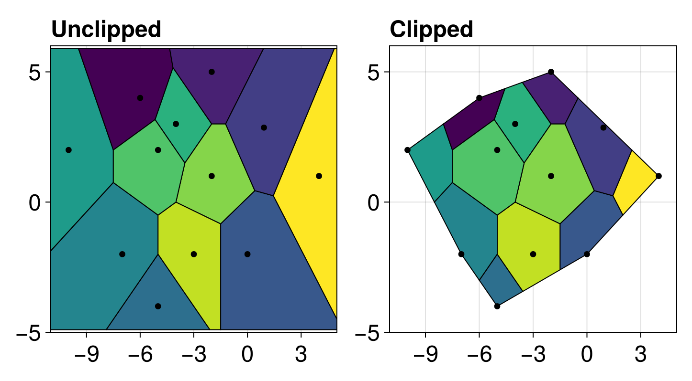
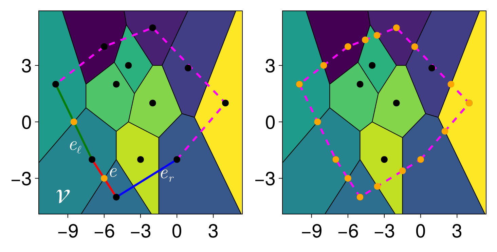
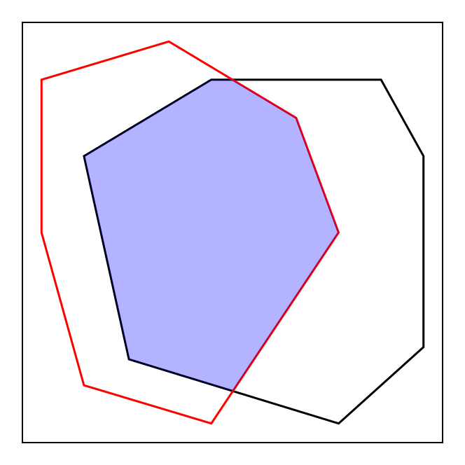
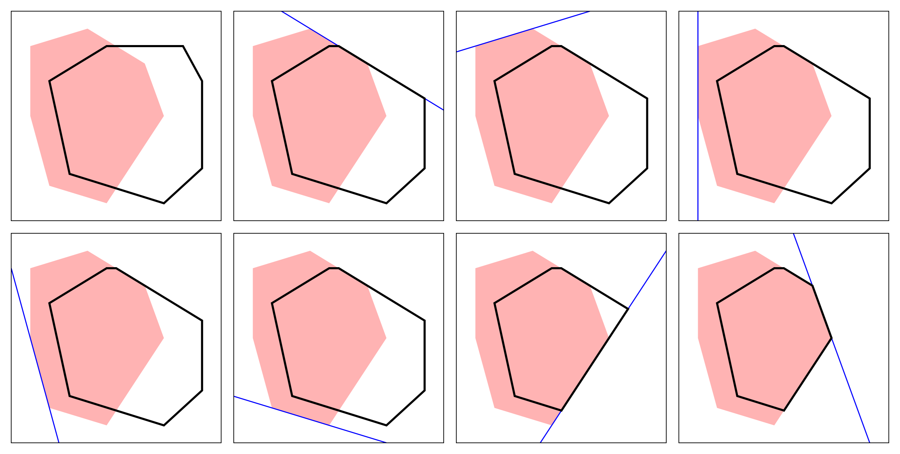
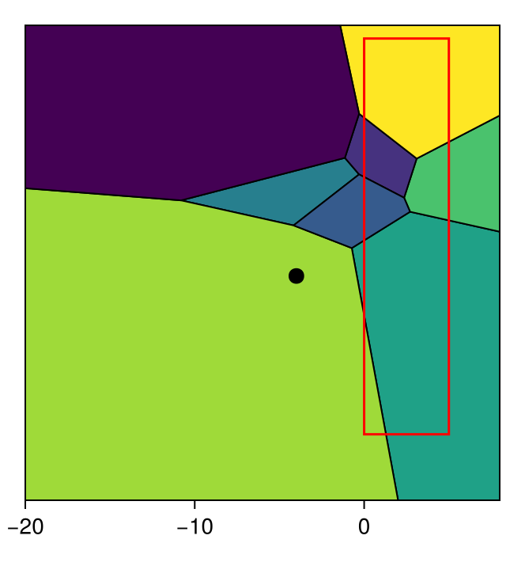
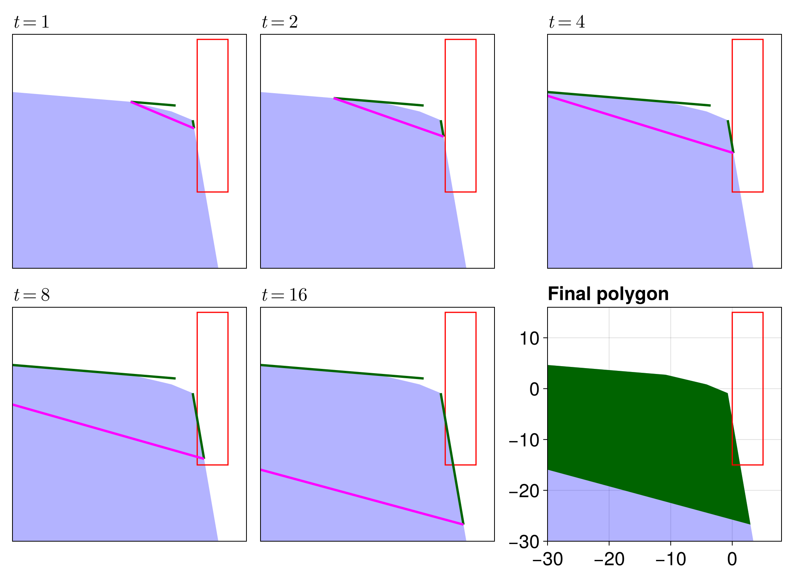

Clipped Voronoi Tessellations
Now we consider a variant of the Voronoi tessellation called the clipped Voronoi tessellation. In the clipped Voronoi tessellation, the Voronoi polygons are clipped to the convex hull of the point set. This is useful when we want to ensure that the Voronoi polygons are bounded and do not extend to infinity. The computation of this tessellation is much more involved than the standard Voronoi tessellation. To be exact, we are interested in computing $\tilde{\mathcal V}(\mathcal P) \equiv \mathcal V(\mathcal P) \cap \mathcal C\mathcal H(\mathcal P)$. An example of a clipped Voronoi tessellation is shown below. We will revisit this example throughout the discussion of the algorithm.
At the end of this section, we also discuss the intersection of $\mathcal V(\mathcal P)$ with a rectangle, and then discuss clipping $\mathcal V(\mathcal P)$ more generically to a given convex polygon.
Computing intersections of the Voronoi polygons and the convex hull
The main complication with clipping the Voronoi polygons to the convex hull is in computing all the intersections of the polygons with the convex hull. For this step, we use an iterative approach. The steps are described below. We will start by describing the algorithm in words, and then provide a clearer example.
Initialising the queue
We maintain a queue of edges to determine where we need to process the intersections. First, we initialise a set $\mathcal E$ containing all boundary edges. We take a random edge $e \in \mathcal E$ and use it to initialise a queue $\mathcal Q$ of polygon edges. To be specific, into $\mathcal Q$ we enqueue $(e, \mathcal V)$, where $\mathcal V_i$ is the polygon incident to the boundary edge $e$; we find this incident polygon by finding the nearest neighbour to the edge's midpoint.
Processing an edge
If either of $\mathcal Q$ or $\mathcal E$ are not empty, we can consider processing an edge for intersections. If $\mathcal Q = \emptyset$, we take the next edge in $\mathcal E$ and enqueue it and its incident polygon into $\mathcal Q$. Now, dequeue a pair $(e, \mathcal V)$ from $\mathcal Q$. If the pair $(e, \mathcal V)$ has already been processed, we skip this step and dequeue the next pair from $\mathcal Q$.
For the first step of this processing, we need to find any intersections of $e$ with the polygon $\mathcal V$. To do this, we first find the edges $e_\ell$ and $e_r$ left and right of $e$, respectively. We then need to consider each edge of $\mathcal V$. Let $s$ be an edge of $\mathcal V$. How $s$ intersects the edges depends on whether (1) it is an unbounded ray oriented so that it is going out to infinity, (2) it is an unbounded ray oriented so that it is coming in from infinity, or (3) it is a bounded edge. The first two cases are reasonably straightforward - just compute the intersection of the edge with the unbounded rays. For the third case, we compute all the intersections of $e$, $e_\ell$, and $e_r$ with $s$. The reason for needing to check all of $e$, $e_\ell$, and $e_r$ rather than $e$ alone is that there may be issues finding intersections when considering Voronoi polygons near corners of the convex hull.
Once we have processed all of the edges of $\mathcal V$, we store the intersections of the edges with $e$, $e_\ell$, and $e_r$ into the sets $\mathcal E(\mathcal V)$, $\mathcal L(\mathcal V)$, and $\mathcal R(\mathcal V)$, respectively. We use these intersections to determine what edges need to be enqueued into $\mathcal Q$, taking care that we do not miss any corner points. Consider some intersection point $p \in \mathcal L(\mathcal V)$; the cases for the other sets are similar. If $(e_\ell, \mathcal V)$ has not been processed, then we enqueue $(e_\ell, \mathcal V_i)$ and $(e_\ell, \mathcal V_j)$ into $\mathcal Q$, where $v_i$ and $v_j$ are the vertices of $e_\ell$. This ensures that we will find the intersections next to this polygon. After enqueueing these pairs, we still need to protect against corner points. To do this, we note that a corner point only needs to be checked if the incident polygon $\mathcal V$ belongs to the boundary of the convex hull. If it is, then let $v_u$ be the shared vertex between $e_i$ and $e_\ell$. If $v_u$ is exactly the generator of $\mathcal V$, then we have a corner point, and so we need to add this corner point into the set of intersections since it will necessarily be included in the clipped Voronoi tessellation. Once we have processed all the intersections for $e$, $e_\ell$, and $e_r$ as above, we need to then also enqueue all of the edges and their adjacent incident poygons into $\mathcal Q$, provided that these pairs have not already been processed.
Let us give an example that illustrates this part of the procedure clearly.
In the first figure above, we are considering the processing of an edge $e$. The Voronoi polygon $\mathcal V$ we consider incident to $e$ is shown, obtained by finding that the midpoint of $e$ is contained in $\mathcal V$. By just processing the intersections of $\mathcal V$, we find the intersections with $\mathcal C\mathcal H(\mathcal P)$ (shown in magenta) shown in orange. This alone is not enough, though, as we can see that we don't identify that the black dot between $e_\ell$ and $e$ should be included in this intersection. This dot is an example of a corner point we were discussing previously, showing the need for this extra processing step. Note also from the above figure that unbounded polygons $\mathcal V$ alone are not sufficient for checking all intersections, as we can see that some of the bounded polygons also intersect with the convex hull. Eventually, after processing all edges in this way, we obtain the set of orange points shown in the second figure.
Clipping the polygons
Once all the intersections have been computed, clipping the polygons is straightforward. For each $\mathcal V$ for which intersections were found, we store with it all intersections found between it and the convex hull. We then remove all vertices from $\mathcal V$ that are outside of the domain and then add in these intersection points, sorting $\mathcal V$ as needed so that it remains a convex polygon. Doing this for all $\mathcal V$ completes the clipping, giving the tessellation shown at the start of this section.
Clipping a Voronoi polygon to a rectangle
Now let us describe clipping to some rectangle $\mathcal R = [a, b] \times [c, d]$ rather than to the convex hull. The procedure here is very different, and rather than processing the entire tessellation at once we apply the procedure to individual polygons. Before we discuss this procedure in general, we need to discuss two algorithms: The Sutherland-Hodgman algorithm and the Liang-Barsky algorithm.
The Sutherland-Hodgman algorithm
The Sutherland-Hodgman algorithm is an algorithm for clipping a polygon (called the subject polygon) to a convex polygon (called the clip polygon). The algorithm works by essentially extending each edge of the clip polygon to infinity and then iteratively clipping the subject polygon to each edge of the clip polygon. Let us give an example of this.
In the figure above, the black polygon shows the subject polygon and the red polygon is the clip polygon. Our aim is to clip the subject polygon to the clip polygon to obtain the blue polygon shown. Letting $\mathcal P_S = \{p_1, \ldots, p_n\}$ and $\mathcal P_C = \{q_1, \ldots, q_m\}$ be the subject and clip polygons listed in counter-clockwise order with $p_1 \neq p_n$ and $q_1 \neq q_m$, respectively, the procedure for this clipping as follows:
- Define $\mathcal O = \mathcal P_S$ and let $q = q_n$. For each $p \in \mathcal P_C$, we first let $\mathcal I = \mathcal O$ and then reset $\mathcal O = \emptyset$.
- With this $p$, let $s = \mathcal I_r$, where $|\mathcal I| = r$ and $\mathcal I_j$ denotes the $j$th element of $\mathcal I$. For $i=1,2,\ldots,r$, we consider the edge $e = (s, \mathcal I_i)$. If $\mathcal I_i$ is left of $\overrightarrow{qp}$, then it is outside of $\mathcal P_S$, and so we need to check if there is any intersection, i.e. if $e$ intersects $\overrightarrow{qp}$, which can be easily checked by considering the position of $s$ relative to $\overrightarrow{qp}$. If $\mathcal I_i$ is not left of $\overrightarrow{qp}$ but $s$ is left, then there must be an intersection of $e$ with $\overrightarrow{qp}$ since $s$ and $\mathcal I_i$ are on opposite sides of $\overrightarrow{qp}$. In either of these cases, the intersection that we find gets pushed into $\mathcal O$, and we then set $s = \mathcal I_i$ and continue onto the next $i$.
- Once we have processed each $\mathcal I_i$, we set $q = p$ and then continue onto the next $p$ in $\mathcal P_C$.
- Finally, once each vertex in $\mathcal P_C$ has been processed, the final polygon is defined by the points in $\mathcal O$.
Let's visualise this procedure.
In the figure above, we show the individual steps of this algorithm. In the second panel, the blue line shows the extended edge of the clip polygon that we use to slice the subject polygon, clipping it onto the edge. For the next four panels, the blue line never touches the subject polygon, and so nothing happens. The last two panels show the last two clips needed to obtain the final polygon.
The Liang-Barsky algorithm
Now we describe the Liang-Barsky algorithm, an algorithm for clipping a line segment to a rectangle. Let us take a line $\vb p(t) = \vb p_0 + t\vb d$, where $\vb p_0 = (x_0, y_0)$, $\vb d = (\Delta x, \Delta y)$, and $0 \leq t \leq 1$. A point $(x, y) = \vb p(t)$ is in the rectangle if (1) $a \leq x_0 + t \Delta x \leq b$ and (2) $c \leq y_0 = t \Delta y \leq d$, or equivalently $tp_i \leq q_i$ for $i=1,2,3,4$, where:
- Left edge: $p_1 = -\Delta x$, $q_1 = x_0 - a$.
- Right edge: $p_2 = \Delta x$, $q_2 = b - x_0$.
- Bottom edge: $p_3 = -\Delta y$, $q_3 = y_0 - c$.
- Top edge: $p_4 = \Delta y$, $q_4 = d - y_0$.
Using these inequalities, we can efficiently compute the intersections by processing each side of the rectangle at a time. Starting with $t_1 = 0$ and $t_2 = 1$ defining the current interval for the intersections, for each edge we do the following: Compute the $p_i$ and $q_i$ associated with the edge, and then $r_i = q_i / p_i$. This $r_i$ gives the parameter value for the intersection point of the line and the current edge (possibly extended outside of $0 \leq t \leq 1$). There are three cases to consider:
- If $p_i = 0$ and $q_i < 0$, then the line is parallel with the edge but outside of the rectangle, and so there are no intersections of the line with the rectangle.
- If $p_i > 0$ and $r < t_1$, then the the line enters the rectangle earlier than what is proposed by the current interval $[t_1, t_2]$, and so the line is outside of the rectangle and we have no intersections to consider. If $r < t_2$, then we update the intersection interval and let $t_2 = r$.
- If $p_i < 0$ and $r > t_2$, then just like above we see that the line is outside of the rectangle and so we return no intersections. If $r > t_1$, set $t_1 = r$.
Applying these cases to each edge one at a time, updating $t_1$ and $t_2$ as required, gives the intersection parameters $t_1$ and $t_2$ defining the intersection of the line with the rectangle. If we ever did exit early, then we do not return any intersections.
Clipping a bounded Voronoi polygon
Now that we have two important algorithms for clipping, let us begin our discussion on clipping the Voronoi polygons in particular, starting with bounded Voronoi polygons. This case is simple - simply apply the Sutherland-Hodgman algorithm to the polygon, using the clip polygon as the rectangle.
Clipping an unbounded Voronoi polygon
The case of clipping an unbounded Voronoi polygon is more complicated. Rather than trying to come up with an effective way to clip the unbounded rays of the polygon to a rectangle and taking care of all the possible edge cases, we use a more direct approach. Our aim is to convert the unbounded polygon into a finite polygon such that its intersection with the rectangle is the same as the intersection of the unbounded polygon with the rectangle. We do this in steps.
First, for the two unbounded edges, we let $u_m$ and $v_m$ be the two midpoints of the edges of the convex hull that the unbounded edges go through.
Next, we compute the maximum distance of the box to $u_m$ and $v_m$, letting $m = \max\{\operatorname{dist}(u_m, \mathcal R), \operatorname{dist}(v_m, \mathcal R)\}$.
Now, starting with
inside = trueand $t = 1$, we do the following untilinside = false.Replace $t$ by $2t$, and compute $p = u_m + td_1$, where $d_1$ is a unit vector in the direction of the unbounded edge associated with $u_m$, and similarly $q = v_m + td_2$.
Apply the Liang-Barsky algorithm to $\mathcal R$ and the line segment through $p$ and $q$, and check if the line segment is completely outside of $\mathcal R$. If it is, then set
outside = true.We then need to be careful about the case where the generator associated with the polygon is outside of $\mathcal R$. In this case, the unbounded edge might start outside of the rectangle and eventually find its way inside. To avoid this, we be conservative and check that the length of each ray is greater than the maximum distance from $u_m$ and $v_m$ to the clip rectangle. In particular, compute $\delta_1 = \|p - u_m\|$ and $\delta_2 = \|q - v_m\|$. If $\min\{\delta_1, \delta_2\} < m$, then the edge might possibly be inside $\mathcal R$. If this is the case, we let
inside = trueand continue, and otherwise we letinside = false.Once we stop iterating, the final values of $p$ and $q$ are the points that the unbounded edges will now stop at, thus defining a bounded polygon.
The reason we start with $t = 1$ instead of, say, $t = 1$ is so that we start at $t = 2$ in the loop and avoid any possibility of duplicated vertices for polygons completely outside of the box. Note also that an important reason that we need to apply the Liang-Barsky algorithm to the line segment through $p$ and $q$ is so that we can join the two unbounded edges together and be confident that this line is completely outside of this rectangle. Let's make this polygon growing procedure clearer with an example, where we also pick a complicated example that demonstrates the need for the conservative check in the fifth step.
In the figure above, the polygon we are interested is the one corresponding to the black dot, and we want to clip this polygon to the red rectangle. The following figures show how we grow the polygon's unbounded edges to begin.
In these figures, the blue polygon shows the Voronoi polygon, and the green edges show the approximations to the unbounded rays; the top-most ray starts away from the polygon since the midpoint is further behind the associated circumcenter in this case. The magenta line shows the line segment joining the two approximations - the aim is to grow the green edges long enough such that the magenta line is completely outside of the red rectangle. Let's analyse each figure.
- At $t = 1$, the line segment is outside of the rectangle, but there is still room to grow the green edges such that they go through the clip rectangle (in particular, the right-most edge). Since the maximum distance of the green edges is not larger than the maximum distance from the green edge's origins to the clip rectangle, our procedure will continue to grow the edges.
- At $t = 2$, we have the same problem as at $t=1$ in that the magenta edge is still outside of the clip rectangle but the green edges can still grow into the clip rectangle.
- At $t = 4$, the magenta edge is finally inside of the clip rectangle, but since it intersects it we need to keep growing the green edges until the magenta edge leaves again.
- The situation at $t=8$ is the same as at $t=4$.
- Finally, at $t=18$, the magenta edge is completely outside of the clip rectangle, and the length of the two green edges is now greater than the maximum distance from the green edge's origins to the clip rectangle. Thus, we can stop growing the unbounded edges here.
- The final figure shows the bounded polygon obtained by growing the unbounded edges (with the left side of it out of frame).
Once a bounded polygon representing the unbounded polygon has been obtained, we apply the Sutherland-Hodgman algorithm as before to clip it to the rectangle. For the example above, the polygon we obtain is shown below.
![](data:image/png;base64, iVBORw0KGgoAAAANSUhEUgAAApgAAAKYCAIAAABYUx+eAAAABmJLR0QA/wD/AP+gvaeTAAAN8UlEQVR4nO3dzXJVVQKG4Z1uy6kjx21R1WMuyZlzr8eRF+B19KwHQEDkzxJCNCI/DRJMTHYPpIqCCn/x5Oy8Zz3PnOSbvex19lnZmud5AgCa/rH0AADg9IQcAMKEHADChBwAwoQcAMKEHADChBwAwoQcAMKEHADChBwAwoQcAMKEHADChBwAwoQcAMKEHADChBwAwoQcAMKEHADChBwAwoQcAMKEHADChBwAwoQcAMKEHADChBwAwoQcAMKEHADChBwAwoQcAMKEHADCPjnTn761tXWmPx8Azr95ns/uh3siB4Cws30i/8uZ/k8EAM6tNZxMeyIHgDAhB4AwIQeAMCEHgDAhB4AwIQeAMCEHgDAhB4AwIQeAsHXc7AbAkr79dtrbW3rE2n311fTZZ0uPWIetM70/9a+r6VzRCrCkixenS5eWHrF2t25NFy4sPWIdHXS0DgBhjtYBhvHll9Pnny894ox988305MnSI9ZKyAGG8fXX08WLS484Y999N1rIHa0DQJiQA0CYkANAmJADQJiQA0CYkANAmJADQJiQA0CYkANAmJADQJiQA0CYkANAmJADQJiQA0CYkANAmJADQJiQA0CYkANAmJADQJiQA0CYkANAmJADQJiQA0CYkANAmJADQJiQA0CYkANAmJADQJiQA0CYkANAmJADQJiQA0CYkANAmJADQJiQA0CYkANAmJADQJiQA0CYkANAmJADQJiQA0CYkANAmJADQJiQA0CYkANAmJADQJiQA0CYkANAmJADQJiQA0CYkANAmJADQJiQA0CYkANAmJADQJiQA0CYkANAmJADQJiQA0CYkANAmJADQJiQA0CYkANAmJADQJiQA0CYkANAmJADQJiQA0CYkANAmJADQJiQA0CYkANAmJADQJiQA0CYkANAmJADQJiQA0CYkANAmJADQJiQA0CYkANAmJADQJiQA0CYkANAmJADQJiQA0CYkANAmJADQJiQA0CYkANAmJADQJiQA0CYkANAmJADQJiQA0CYkANAmJADQJiQA0CYkANAmJADQJiQA0CYkANAmJADQJiQA0CYkANAmJADQJiQA0CYkANAmJADQJiQA0CYkANAmJADQJiQA0CYkANAmJADQJiQA0CYkANAmJADQJiQA0CYkANAmJADQJiQA0CYkANAmJADQJiQA0CYkANAmJADQJiQA0CYkANAmJADQJiQA0CYkANAmJADQJiQA0CYkANAmJADQJiQA0CYkANAmJADQJiQA0CYkANAmJADQJiQA0CYkANAmJADQJiQA0CYkANAmJADQJiQA0CYkANAmJADQJiQA0CYkANAmJADQJiQA0CYkANAmJADQJiQA0CYkANAmJADQJiQA0CYkANAmJADQJiQA0CYkANAmJADQJiQA0CYkANAmJADQJiQA0CYkANAmJADQJiQA0CYkANAmJADQJiQA0CYkANAmJADQJiQA0CYkANAmJADQJiQA0CYkANAmJADQJiQA0CYkANAmJADQJiQA0CYkANAmJADQJiQA0CYkANAmJADQJiQA0CYkANAmJADQJiQA0CYkANAmJADQJiQA0CYkANAmJADQJiQA0CYkANAmJADQJiQA0CYkANAmJADQJiQA0CYkANAmJADQJiQA0CYkANAmJADQJiQA0CYkANAmJADQJiQA0CYkANAmJADQJiQA0CYkANAmJADQJiQA0CYkANAmJADQJiQA0CYkANAmJADQJiQA0CYkANAmJADQJiQA0CYkANAmJADQJiQA0CYkANAmJADQJiQA0CYkANAmJADQJiQA0CYkANAmJADQJiQA0CYkANAmJADQJiQA0CYkANAmJADQJiQA0CYkANAmJADQJiQA0CYkANAmJADQJiQA0CYkANAmJADQJiQA0CYkANAmJADQJiQA0CYkANAmJADQJiQA0CYkANAmJADQJiQA0CYkANAmJADQJiQA0CYkANAmJADQJiQA0CYkANAmJADQJiQA0CYkAOM4uj4aOkJrJ6QA4zip4c/LT2B1RNygFHc3Lu59ARWT8gBRnFr79bSE1g9IQcYxY29G0tPYPWEHGAUjtY3kpADjOLuo7v7h/tLr2DFhBxgFMfz8bXda0uvYMWEHGAgV3auLD2BFRNygIEI+eYRcoCBCPnmEXKAgVzeubz0BFZMyAEGcu/RvcfPHy+9glUScoCxXLnvdH2jCDnAWHxMvmGEHGAsQr5hhBxgLEK+YYQcYCxeXN8wQg4wloe/P9x9srv0ClZGyAGG43R9kwg5wHCcrm8SIQcYzvb97aUnsDJCDjCcy/c8kW8OIQcYzvb97eP5eOkVrIaQAwzn+cHzOw/uLL2C1RBygBF5cX1jCDnAiIR8Ywg5wIiEfGMIOcCI/DHTjSHkACO6/vP1gz8Pll7BCgg5wIgOjw5/+OWHpVewAkIOMCgXtW4GIQcYlItaN4OQAwzKRa2bQcgBBuXF9c0g5ACDuvPgztMXT5dewd8l5ACDmuf52u61pVfwdwk5wLjc77YBhBxgXD4m3wBCDjAuT+QbQMgBxiXkG0DIAca1+2T316e/Lr2Cv0XIAYbmfrc6IQcYmtP1OiEHGJon8johBxiav4FWJ+QAQ7uyc2We56VXcHpCDjC0J/tP7j26t/QKTk/IAUbnfrc0IQcYnT9MnibkAKPz4nqakAOMzlfJ04QcYHRXd68eHR8tvYJTEnKA0b04fHFz7+bSKzglIQfAi+thQg6Aj8nDhBwAIQ8TcgCEPEzIAZhu7N3YP9xfegWnIeQATEfHR9d/vr70Ck5DyAGYJhe1Zgk5ANPkotYsIQdgmnyVPEvIAZgmR+tZQg7ANE3T3Ud3Hz9/vPQKPpqQAzBN0zTP89Xdq0uv4KMJOQAvuRamSMgBeEnIi4QcgJe8uF4k5AC85MX1IiEH4KUHzx788r9fll7BxxFyAF65vOOhPEbIAXjF+245Qg7AK25czxFyAF7xvluOkAPwyvb97Xmel17BRxByAF559sezH3/7cekVfAQhB+A13ndrEXIAXiPkLUIOwGtc1Noi5AC8xhN5i5AD8Jrvf/7+4M+DpVfwoYQcgNcc/HlwY+/G0iv4UEIOwJucrocIOQBvclFriJAD8CZ/Ay1EyAF4k6P1ECEH4E23f739+x+/L72CDyLkALzpeD6+tntt6RV8ECEH4ATud6sQcgBO4GPyCiEH4ARCXiHkAJzAN9AqhByAE9x/fP+3Z78tvYL3E3IATuZ+twQhB+BkXlxPEHIATuZ9twQhB+BkQp4g5ACcTMgThByAkz16/mjn8c7SK3gPIQfgrTyUn39CDsBbXb7nWpjzTsgBeCtfJT//hByAt/JV8vNPyAF4q+2d7aPjo6VX8C5CDsBb7R/u335we+kVvIuQA/AuXlw/54QcgHcR8nPuk6UHALAm/3o6vfjnR/+rh//9z/Tv62cw52wcHi69YN225nk+w5++tTVN05n+CgDe4+LF6dKlpUes3a1b04ULS49YRwcdrQNAmKN1gE33xRfTixdLj1i7Tz9desGaOFoHgLPiaB0AeBchB4AwIQeAMCEHgDAhB4AwIQeAMCEHgDAhB4AwIQeAMCEHgDAhB4AwIQeAMCEHgDAhB4AwIQeAMCEHgDAhB4AwIQeAMCEHgDAhB4AwIQeAMCEHgDAhB4AwIQeAMCEHgDAhB4AwIQeAMCEHgDAhB4AwIQeAMCEHgDAhB4AwIQeAMCEHgDAhB4AwIQeAMCEHgDAhB4AwIQeAMCEHgDAhB4AwIQeAMCEHgDAhB4AwIQeAMCEHgDAhB4AwIQeAMCEHgDAhB4AwIQeAMCEHgDAhB4AwIQeAMCEHgDAhB4AwIQeAMCEHgDAhB4AwIQeAMCEHgDAhB4AwIQeAMCEHgDAhB4AwIQeAMCEHgDAhB4AwIQeAMCEHgDAhB4AwIQeAMCEHgDAhB4AwIQeAMCEHgDAhB4AwIQeAMCEHgDAhB4AwIQeAMCEHgDAhB4AwIQeAMCEHgDAhB4AwIQeAMCEHgDAhB4AwIQeAMCEHgDAhB4AwIQeAMCEHgDAhB4AwIQeAMCEHgDAhB4AwIQeAMCEHgDAhB4AwIQeAMCEHgDAhB4AwIQeAMCEHgDAhB4AwIQeAMCEHgDAhB4AwIQeAMCEHgDAhB4AwIQeAMCEHgDAhB4AwIQeAMCEHgDAhB4AwIQeAMCEHgDAhB4AwIQeAMCEHgDAhB4AwIQeAMCEHgDAhB4AwIQeAMCEHgDAhB4AwIQeAMCEHgDAhB4AwIQeAMCEHgDAhB4AwIQeAMCEHgDAhB4AwIQeAMCEHgDAhB4AwIQeAMCEHgDAhB4AwIQeAMCEHgDAhB4AwIQeAMCEHgDAhB4AwIQeAMCEHgDAhB4AwIQeAMCEHgDAhB4AwIQeAMCEHgDAhB4AwIQeAMCEHgDAhB4AwIQeAMCEHgDAhB4AwIQeAMCEHgDAhB4AwIQeAMCEHgDAhB4AwIQeAMCEHgDAhB4AwIQeAMCEHgDAhB4AwIQeAMCEHgDAhB4AwIQeAMCEHgDAhB4AwIQeAMCEHgDAhB4AwIQeAMCEHgDAhB4AwIQeAsE/W8Du2trbW8FsAYECeyAEgbGue56U3AACn5IkcAMKEHADChBwAwoQcAMKEHADChBwAwoQcAMKEHADChBwAwoQcAMKEHADChBwAwoQcAMKEHADChBwAwoQcAMKEHADChBwAwoQcAMKEHADChBwAwoQcAMKEHADChBwAwoQcAMKEHADChBwAwoQcAMKEHADChBwAwv4PL3K47ia20IIAAAAASUVORK5CYII=)
Computing the intersection of the Voronoi tessellation with a convex polygon
We also provide support for clipping Voronoi tessellations to convex polygons. The mathematical details are not too complex in this case. To summarise, we simply, letting $\mathcal C$ denote the convex polygon,
- Find a bounding box for $\mathcal C$, say $[a, b] \times [c, d]$.
- Using the approach in the previous section, clip all Voronoi polygons to $[a, b] \times [c, d]$.
- Then, using the Sutherland-Hodgman algorithm (this is why the polygon must be convex), clip all these newly clipped Voronoi polygons to $\mathcal C$.
The second approach is used because we need to ensure that we grow the unbounded polygons appropriately to guarantee that the third step is correct.